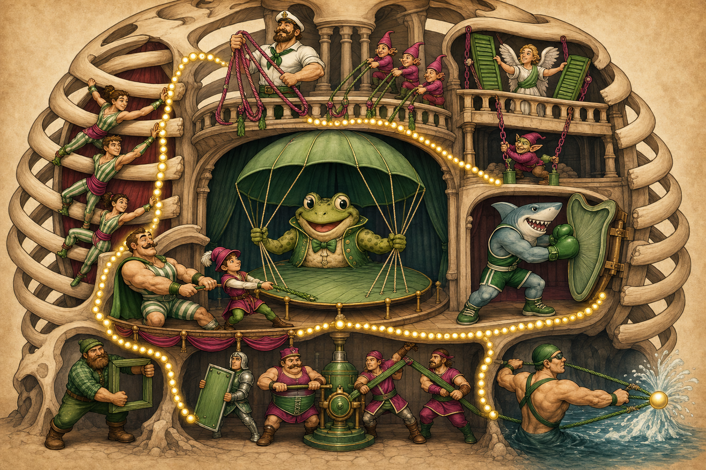

1 Basis-Motor
Diaphragma: Kuppel senkt sich. C3–5.
Sketchy-/Meditricks-artiger Memory-Palast · keine Diagramm-Seite
Schau zuerst ins Bild: oben/seitlich wird gezogen, unten senkt die Kuppel, unten/rechts wird gepresst.
Diese Seite ist wieder als betrachtbarer Gedächtnisort aufgebaut: großes Story-Bild mit klickbaren roten Hotspots, dann Detail-Hook-Bild und erst danach die prüfbare Tabelle.
Das ist das eigentliche Lernbild. Merke dir die Szene wie bei Sketchy/Meditricks: Figuren + Ort + Handlung. Die roten Punkte führen dich durch die Route.

1 Kuppelkröte atmet ein → 2 Rippenleiter öffnet → 3 Halszug + 4 Brustkran + 5 Sägezähne helfen → 6 Bauchpresse + 7 Hustenanker atmen forciert aus.
Diaphragma: Kuppel senkt sich. C3–5.
Interkostale: Figuren zwischen den Rippen. Th1–11.
SCM/Scaleni/Pectorales/Serrati: ziehen bei Atemnot den Thorax auf.
Bauchwand/Quadratus/Latissimus/Transversus thoracis: pressen, fixieren, husten.
Wenn du die Figuren einzeln abrufen willst: diese Bildtafel ist die Detail-Ebene mit Muskel- und Innervationsfiguren.

Noch ein Story-Bild als Wiederholungsansicht: gleiche Idee, anderer Blick auf den Atemzug-Palast.

Das Bild ist der Palast. Diese Tabelle ist der prüfbare Faktenanker.
| # | Figur / Muskel | Gruppe | Innervation | Aktion im Palast |
|---|---|---|---|---|
| 1 | Zwerchfell-Kuppelkröte Diaphragma | Basis / Inspiration | N. phrenicus C3–5 | Zentrale Kuppel senkt sich → Thoraxvolumen ↑ |
| 2 | Rippenleiter-Akrobaten Interkostalmuskulatur | Basis / Rippenmechanik | Nn. intercostales Th1–11; N. subcostalis Th12 | Figuren zwischen den Rippen: äußere Fasern heben, innere/interosseöse helfen forcierter Exspiration |
| 3 | Sterno-Kleido-Mastoid-Kapitän M. sternocleidomastoideus | Inspiratorische Atemhilfe | N. accessorius XI + Rr. ventrales C2–3 | Kapitän zieht Sternum/Clavicula-Masten hoch |
| 4 | Vordere Skalenen-Stufe M. scalenus anterior | Inspiratorische Atemhilfe | Rr. ventrales C4–6 | Treppengnom hebt 1. Rippe |
| 5 | Mittlere Skalenen-Stufe M. scalenus medius | Inspiratorische Atemhilfe | Rr. ventrales C3–8 | mittlere Treppe hebt 1. Rippe |
| 6 | Hintere Skalenen-Stufe M. scalenus posterior | Inspiratorische Atemhilfe | Rr. ventrales C6–8 | hintere Treppe hebt 2. Rippe |
| 7 | Großer Pectoralis-Kran M. pectoralis major | Inspiratorische Atemhilfe | Nn. pectorales medialis/lateralis C5–Th1 | großer Brust-Kran zieht bei fixierten Armen den Thorax auf |
| 8 | Kleiner Pectoralis-Page M. pectoralis minor | Inspiratorische Atemhilfe | N. pectoralis medialis C8–Th1 | kleiner Page zieht Rippen 3–5 nach oben |
| 9 | Oberer Sägezahn-Engel M. serratus posterior superior | Inspiratorische Atemhilfe | Nn. intercostales Th2–5 | oberer Sägeflügel hebt obere Rippen |
| 10 | Unterer Sägezahn-Kobold M. serratus posterior inferior | Inspiratorische Atemhilfe | Nn. intercostales Th9–12 | unterer Sägekobold zieht untere Rippen kaudal/lateral |
| 11 | Vorderer Sägehai-Boxer M. serratus anterior | Inspiratorische Atemhilfe | N. thoracicus longus C5–7 | Sägehai presst Scapula an; bei fixiertem Schultergürtel Rippenhebung |
| 12 | Gerader Bauchritter M. rectus abdominis | Exspiratorische Atemhilfe | Nn. thoracoabdominales Th7–12 | gerades Schild macht Bauchpresse |
| 13 | Quer-Korsettmeister M. transversus abdominis | Exspiratorische Atemhilfe | Nn. thoracoabdominales Th7–12 + L1 | queres Korsett komprimiert Bauchwand |
| 14 | Äußerer Schrägschärpen-Krieger M. obliquus externus abdominis | Exspiratorische Atemhilfe | Th5–12 | äußere Schärpe zieht Rippen/Bauch nach kaudal |
| 15 | Innerer Gegenschärpen-Krieger M. obliquus internus abdominis | Exspiratorische Atemhilfe | Th7–12 + L1 | innere Gegenschärpe koppelt Rotation und Bauchpresse |
| 16 | Quadratischer Lendenanker M. quadratus lumborum | Exspiratorische Atemhilfe | N. subcostalis Th12 + Plexus lumbalis L1–4 | Quadrat-Anker fixiert 12. Rippe |
| 17 | Breiter Husten-Schwimmer M. latissimus dorsi | Exspiratorische Atemhilfe | N. thoracodorsalis C6–8 | breiter Schwimmer komprimiert Thorax beim Husten |
| 18 | Brustbein-Schilddrücker M. transversus thoracis | Exspiratorische Atemhilfe | Nn. intercostales Th2–6 | Sternum-Schild senkt Rippenknorpel |
Muskelgruppen nach DocCheck Flexikon „Atemmuskulatur“; Innervationen nach gängigen anatomischen Angaben. Die Bilder sind Merkhaken, die Tabelle ist der Faktenlayer.